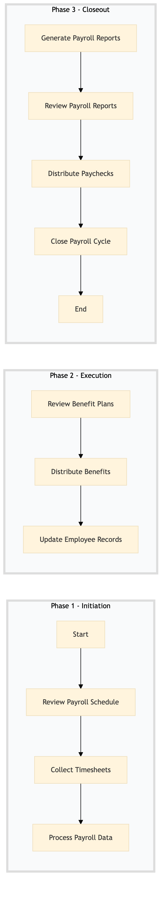

| Role | Steps |
|---|---|
| Payroll Administrator | 1.1 1.2 1.3 3.1 3.3 3.4 |
| Benefits Administrator | 2.1 2.2 |
| HR Coordinator | 2.3 |
| HR Manager | 3.2 |
| Step | Name | Role | System | Input | Output | KPI | Dec? | Exc? | Pain Point / Risk |
|---|---|---|---|---|---|---|---|---|---|
| 1.1 | Review Payroll Schedule | Payroll Administrator | Oracle OPERA Cloud | Monthly payroll schedule | Confirmed payroll schedule | Less than 30 minutes | N | Y | Incorrect or outdated payroll schedules can lead to processing delays. |
| 1.2 | Collect Timesheets | Payroll Administrator | Oracle OPERA Cloud | Employee timesheets | Validated timesheets | Less than 2 hours per employee | Y | N | Missing or incomplete timesheets can cause payroll delays. |
| 1.3 | Process Payroll Data | Payroll Administrator | Oracle OPERA Cloud | Validated timesheets and payroll schedule | Processed payroll data | Less than 4 hours for monthly processing | N | Y | Errors in payroll data can lead to incorrect payments. |
| 2.1 | Review Benefit Plans | Benefits Administrator | Oracle OPERA Cloud | Employee benefit plans | Updated benefit plans | Less than 30 minutes per plan | Y | N | Outdated or incorrect benefit information can lead to employee dissatisfaction. |
| 2.2 | Distribute Benefits | Benefits Administrator | Oracle OPERA Cloud | Processed payroll data and updated benefit plans | Benefit distribution records | Less than 4 hours for monthly distribution | N | Y | Delayed benefit distribution can cause financial strain on employees. |
| 2.3 | Update Employee Records | HR Coordinator | Oracle OPERA Cloud | Processed payroll data and benefit distribution records | Updated employee records | Less than 1 hour per employee | Y | N | Inaccurate employee records can lead to compliance issues. |
| 3.1 | Generate Payroll Reports | Payroll Administrator | Oracle OPERA Cloud | Processed payroll data | Payroll reports | Less than 2 hours for monthly reporting | N | Y | Inaccurate or delayed payroll reports can affect financial planning. |
| 3.2 | Review Payroll Reports | HR Manager | Oracle OPERA Cloud | Payroll reports | Approved payroll reports | Less than 1 hour per report | Y | N | Errors in payroll reports can lead to financial discrepancies. |
| 3.3 | Distribute Paychecks | Payroll Administrator | Oracle OPERA Cloud | Approved payroll reports | Paid employees | Less than 24 hours for paycheck distribution | N | Y | Delayed paycheck distribution can cause employee dissatisfaction. |
| 3.4 | Close Payroll Cycle | Payroll Administrator | Oracle OPERA Cloud | Paid employees and updated records | Closed payroll cycle | Less than 1 hour for closure | N | Y | Errors in the final payroll closure can lead to ongoing issues. |
The HR-TL-04 process at a Marriott full-service hotel involves managing payroll and benefits administration, ensuring accurate processing and timely distribution of compensation and employee benefits.